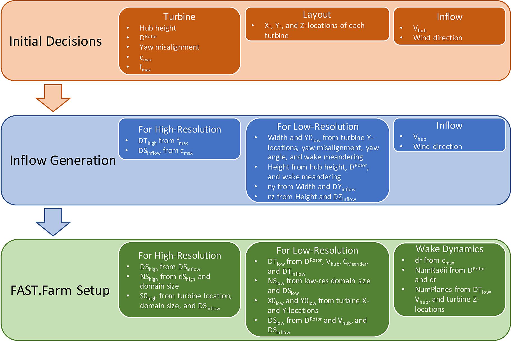
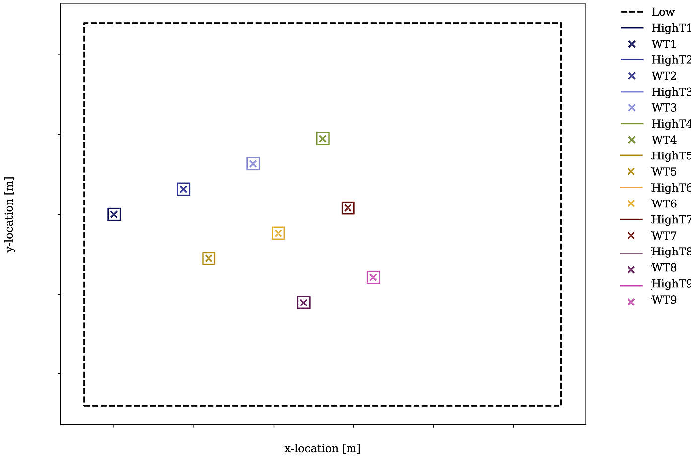

4.19.6. 모델링 지침
이 장에는 FAST.Farm 시뮬레이션을 설정하고 실행하기 위한 모델링 지침이 포함되어 있습니다. 여기에는 유입 풍력 발전에 대한 지침이 포함됩니다. 저해상도 및 고해상도 그리드 이산화; 매개변수 선택; 일반적으로 발생하는 오류에 대한 솔루션.
4.19.6.1. FAST.Farm 설정 개요
이 섹션에는 특히 주변 유입 및 FAST.Farm 시뮬레이션을 설정하는 방법에 대한 높은 수준의 개요, 다양한 매개변수를 계산하는 데 필요한 정보가 포함되어 있습니다. 그림 4.64.


그림 4.64 유입 생성 및 FAST.Farm 시뮬레이션 설정을 위한 정보 흐름도. 여기, S = X, Y또는 Z.
이 회로도에는 FAST.Farm 시뮬레이션과 관련된 정보만 포함되어 있습니다. 일반적으로 유입 및 OpenFAST 모델을 생성하려면 추가 유입 정보가 필요합니다. 입력 매개변수를 계산하는 데 사용해야 하는 특정 방정식은 다음에서 설명합니다. 섹션 4.19.6.4. FAST.Farm에서 제공되는 Python 노트북을 사용하는 것이 좋습니다. 도구 저장소 는 새로운 유입 또는 FAST.Farm 케이스를 설정할 때 사용됩니다. 이러한 매개변수를 부적절하게 설정하면 일반적인 오류 및/또는 과도한 보간이 발생할 수 있으므로 피해야 합니다. 이 장에서는 풍향이 다음과 같다고 가정합니다. \(0^\circ\)– 즉, +X 축.
FAST.Farm 시뮬레이션 설정 및 해당 유입을 생성할 때 계획이 중요합니다. 부적절한 계획으로 인해 FAST.Farm 오류가 발생하거나 유입량을 재생성해야 할 수 있습니다. 알아야 할 가치 사전에 는 다음과 같습니다.
풍력터빈 로터 직경(\(D^\text{Rotor}\));
풍력터빈 허브 높이;
최대 터빈 코드 길이(\(c_\text{max}\));
최대 터빈 고유 주파수( 풍력 발전 단지에 있는 모든 터빈의\(f_\text{max}\));
X, Y및 이 플래그 값 아래에 Z 위치;
원하는 평균 유입 허브 높이 풍속; 그리고
는 유입 풍향을 의미합니다.
이 정보를 사용하여 계산해야 하는 값은 다음과 같습니다.
유입 및 FAST.Farm 도메인 크기(높이, 너비 및 길이)
FAST.Farm 고해상도 및 저해상도 도메인 원본 위치(S0_High 및 S0_Low, 여기서 S = X, Y또는 Z);
고해상도 및 저해상도 시간 이산화 값(DT_High 및 DT_Low);
고해상도 및 저해상도 공간 이산화 값(DS_High 및 DS_Low);
고해상도 및 저해상도 도메인의 그리드 포인트 수(NS_High 및 NS_Low);
실제 평균 유입 허브 높이 풍속(\(V_\text{hub}\));
추가 웨이크 역학 속성(박사, NumRadii및 이 플래그 값 아래에 NumPlanes).
이 정보를 사용하여 유입 생성을 시작할 수 있습니다. 필수는 아니지만 FAST.Farm 시뮬레이션을 설정하기 전에 유입 생성을 완료하는 것이 좋습니다. 이는 실현된 공간 이산화 값 및/또는 평균 허브 높이 속도가 원하는 것과 다를 수 있기 때문입니다. 이러한 매개변수의 올바른 값을 가지면 FAST.Farm 시뮬레이션에서 바람 데이터의 보간이 줄어들어 주변 난류가 줄어듭니다.
유입 생성을 설정할 때 권장되는 공간적 및 시간적 이산화를 사용해야 합니다. 섹션 4.19.6.3. 사용하는 경우:
Mod_AmbWind = 1이면 높은 충실도가 생성되어야 하며 모든 이산화 값을 원하는 정확한 값으로 지정할 수 있습니다.
Mod_AmbWind = 2인 경우, 단일 합성 유입(TurbSim 또는 Mann)은 여기에서 권장되는 고해상도 이산화 값을 사용하여 생성되어야 합니다.
Mod_AmbWind = 3, 다중 합성 유입이 생성되어야 합니다. 이 경우 생성된 모든 고해상도 유입량에 대해 권장되는 고해상도 이산화를 사용해야 합니다. 저해상도 유입량 생성을 위해서는 권장되는 고해상도 시간 이산화와 저해상도 공간 이산화를 사용해야 합니다.
합성 유입(TurbSim 또는 Mann)을 사용하는 경우 유입 흐름 방향 공간 이산화, DX_Inflow는 사용자가 지정하지 않지만 대신 Taylor의 동결 난류 가정을 기반으로 합니다. FAST.Farm 도메인의 스트림별 이산화는 유입 스트림별 이산화를 기반으로 해야 하기 때문에 사용자는 유입 시간 단계를 사용하여 이 값을 계산해야 합니다(DT_High) 및 합성풍 데이터의 이류 속도, \(V_\text{Advect}\). 는 \(V_\text{Advect}\) 는 허브 높이에서 실제 풍속과 다를 수 있으며, \(V_\text{Hub}\)에서 설명한 대로 섹션 4.19.6.2.3이며 생성된 합성 유입량에서 직접 계산되어야 합니다. 그러므로 정확한 결과는 DX_Inflow 는 유입이 생성될 때까지 알려지지 않습니다. 추가적으로, DX_Inflow 는 원하는 값보다 훨씬 작을 가능성이 높습니다. DX_Low 및 DX_High.
FAST.Farm 시뮬레이션 자체를 설정할 때 유입 생성에 사용된 많은 값이 여기에서 FAST.Farm 도메인을 지정하는 데 다시 사용됩니다. FAST.Farm의 이 도메인 사양은 합성 난류 유입을 사용할 때만 필요합니다. 저해상도 도메인의 원점(X0_Low, Y0_Low및 이 플래그 값 아래에 Z0_Low)는 다음을 기준으로 결정되어야 합니다.
최소 터빈 X- 및 Y-위치;
터빈 요 정렬 불량;
유입 풍향; 그리고
항적 구불구불한 예상 범위.
구체적으로는, X0_Low 는 모든 터빈 위치를 수용할 뿐만 아니라 원하는 경우 풍력 발전 단지의 방해받지 않는 유입 흐름을 분석할 수 있는 충분한 공간을 허용해야 합니다. Y0_Low 는 수평 후류 사행뿐만 아니라 모든 터빈 위치를 수용해야 합니다. 지상에서는 바람을 발생시킬 수 없는 TurbSim을 사용할 경우, Z0_Low 는 지면에 가깝지만 위에 있어야 합니다.
FAST.Farm 도메인 너비와 높이는 다음을 사용하여 계산됩니다.
터빈 위치;
계산된 Y0_Low 및 Z0_Low 값;
수평 및 수직 구불구불한 거리 요구 사항;
터빈 요 정렬 불량; 그리고
유입 풍향.
도메인 길이는 풍력 발전 단지의 하천 방향 범위를 기반으로 해야 하며 원하는 경우 풍력 발전 단지의 하류에서 발생하는 유출을 분석할 수 있는 충분한 공간을 허용해야 합니다.
FAST.Farm의 저해상도 도메인(DY_Low 및 DZ_Low) 및 그리드 포인트 수(NY_Low 및 NZ_Low)는 다음을 사용하여 계산할 수 있습니다.
도메인 너비와 높이;
생성된 유입의 측면 및 수직 간격; 그리고
DY_Inflow 및 DZ_Inflow.
저해상도 시간 이산화(DT_Low)는 다음을 사용하여 계산되어야 합니다.
터빈 직경;
유입 허브 높이 속도; 그리고
유입 시간적 이산화.
유선형 간격 및 그리드 포인트 수(DX_Low 및 NX_Low)도 기반으로 해야 합니다. DT_Low 및 평균 풍속.
계산할 최종 도메인 매개변수는 고해상도 도메인의 위치입니다(X0_High, Y0_High및 이 플래그 값 아래에 Z0_High) 및 도메인을 구성하는 데 필요한 그리드 포인트 수(NX_High, NY_High및 이 플래그 값 아래에 NZ_High). 이러한 수량은 다음을 통해 결정되어야 합니다.
DS_High 값;
터빈 위치; 그리고
는 고해상도 도메인의 크기입니다.
해당 DS_High 값은 권장되는 고해상도 도메인 이산화 기준에 따라 선택되어야 합니다. 섹션 4.19.6.3.
FAST.Farm 입력 파일을 지정할 때 추가 후류 역학 수량이 필요합니다. 섹션 4.19.6.4.2. 설정하는 것이 좋습니다 후류 직경에 대한 박사 에 액추에이터 라인 애플리케이션용 \(\le D^\text{Rotor} / 15\); NumRadii 및 박사; 그리고 NumPlanes 켜짐 DT_Low, 유입 허브 높이 속도 및 터빈 위치 간 거리.
샘플 터빈 레이아웃과 도메인 위치는 다음과 같습니다. 그림 4.65.


그림 4.65 저해상도 및 고해상도 도메인과 터빈 위치를 포함하는 9개 터빈 풍력 발전 단지 레이아웃 예시의 도식입니다.
4.19.6.2. 유입 풍력 발전
이 섹션에는 FAST.Farm과 함께 사용하기 위해 난류 유입을 생성해야 하는 지침이 포함되어 있습니다.
4.19.6.2.1. 고충실도 전구체 주변 유입
충실도가 높은 전구체 주변 유입을 생성할 수 있는 다양한 방법이 있습니다. 이 섹션에서는 다음을 사용하여 이러한 유입을 생성하는 데 중점을 둡니다. SOWFA.
SOWFA를 사용하여 FAST.Farm 전구체 유입을 생성할 때, ABL솔버 전처리기가 사용됩니다. 기본 고충실도 솔루션은 FAST.Farm의 유입으로 직접 사용되지 않고 대신 지정된 도메인 및 분할 내에서 샘플링된다는 점에 유의하는 것이 중요합니다. 이 샘플링은 SOWFA를 통해 수행되며 SOWFA 입력 파일에 지정됩니다. 유입 데이터는 3D 볼륨 VTK 형식 파일에 기록됩니다. 섹션 4.19.4.3. 이는 대용량 ASCII 형식 파일입니다. 따라서 정밀도를 예를 들어 3자리로 줄이는 것이 좋습니다. SOWFA 시뮬레이션에 사용되는 도메인 크기와 저해상도 도메인 이산화는 FAST.Farm 시뮬레이션에 필요한 것보다 훨씬 큽니다. 따라서 FAST.Farm 이산화 제안에 자세히 설명된 FAST.Farm 이산화 제안을 기반으로 FAST.Farm과 함께 사용할 경계 조건을 생성하려면 샘플링 파일을 설정해야 합니다. 섹션 4.19.6.3. 두 개의 샘플링 파일이 필요합니다. 하나는 농장 규모 도메인의 저해상도 샘플링용이고 다른 하나는 터빈 규모 도메인의 고해상도 샘플링용입니다. 각 샘플링 파일은 FAST.Farm 시뮬레이션에 사용될 공간적 및 시간적 이산화를 정의합니다. 저해상도 도메인 파일은 FAST.Farm 시뮬레이션에 사용될 단일 저해상도 도메인을 정의합니다. 고해상도 도메인 파일은 FAST.Farm 시뮬레이션에 사용될 각 고해상도 도메인을 정의합니다. 따라서 유입을 생성하기 전에 FAST.Farm 시뮬레이션에서 모든 터빈이 어디에 위치할 것인지 정확히 아는 것이 중요합니다. 이 FAST.Farm 샘플링 단계는 계산 비용이 많이 들 수 있습니다. 따라서 사용자는 SOWFA를 실행하기 전에 터빈 위치 및 이산화 수준을 포함하여 모든 입력이 올바른지 확인하는 것이 좋습니다.
예제 Python 노트북은 FAST.Farm에 제공됩니다. 도구 저장소 는 특정 FAST.Farm 시뮬레이션을 위해 이러한 파일을 설정하는 데 도움을 줍니다.
4.19.6.2.2. 복잡한 지형
복잡한 지형 또는 해양 시스템의 시간에 따라 변하는 해수면 고도는 LES 전구체에서 표면 경계 조건을 모델링하는 등 지형을 따르는 주변 유입 데이터를 제공하여 FAST.Farm에서 모델링할 수 있습니다. FAST.Farm에서 사용하는 VTK 형식은 공간적으로 균일합니다. 복잡한 지형이나 균일한 그리드가 있는 파도를 수용하려면 지형 표면 아래 지점의 풍속을 NaN으로 설정해야 합니다. 모든 NaN 값은 FAST.Farm에 의해 트랩되고 도메인 외부로 표시되므로 AWAE 모듈 내의 계산에서는 사용되지 않습니다. 주변 바람 유입이 지형을 따르는 경우, FAST.Farm에 복잡한 지형, 흐름 재순환 또는 분리, 국지적 압력 변화에 대한 명시적인 모델이 포함되어 있지 않더라도 후류도 자연스럽게 지형을 따릅니다.
SOWFA 유입 전구체를 사용하는 경우 SOWFA 유입 전구체 생성에서 복잡한 지형이 고려되므로 FAST.Farm 시뮬레이션을 위해 샘플링할 때 복잡한 지형을 설명하려면 vtk 파일이 필요합니다.
4.19.6.2.3. 합성 난류 주변 유입
합성으로 생성된 난류 유입을 FAST.Farm에서 사용하여 다양한 대기 조건에서 터빈 반응과 후류 역학을 정확하게 예측할 수 있습니다. 이를 달성하는 방법에는 여러 가지가 있습니다. 지원되는 형식으로 출력 파일을 생성하는 한 모든 방법을 사용할 수 있습니다. InflowWind. TurbSim 및 Mann 모델에 대한 모델링 지침은 다음에서 논의됩니다.
4.19.6.2.3.1. TurbSim
NREL 도구를 사용하는 경우 TurbSim v2, 원하는 특정 결과를 향해 합성 난류를 유도하기 위해 다양한 옵션을 사용할 수 있습니다.
표준 또는 사용자 정의 시간 평균 바람 프로필(전단, 방향);
세 방향(바람, u, 가로, v 및 w)의 표준 또는 사용자 정의 속도 스펙트럼;
표준 또는 사용자 정의 공간 지점 간 일관성; 그리고
표준 또는 사용자 정의 구성 요소 간 상관 관계(레이놀즈 스트레스).
또한, TurbSim v2를 사용하면 사용자는 하나 이상의 지점(즉, 구속된 바람)에서 사용자가 정의한 3성분 바람 시계열과 일치하는 난류를 생성할 수 있습니다. 이러한 옵션은 개별적으로 또는 일부 조합으로 사용할 수 있습니다(단, 사용자 정의 스펙트럼과 사용자 정의 시계열은 함께 사용할 수 없습니다). 적절하게 정의되면 이러한 모든 방법은 FAST.Farm 결과와 참조 데이터 세트(예: LES 전구체 또는 물리적으로 측정된 유입량과 비교) 간의 터빈 응답 및 후류 역학을 효과적으로 통계적으로 비교할 수 있습니다. 그러나 대기 조건이 적절하게 모델링되도록 이러한 유입을 생성할 때 주의를 기울여야 합니다.
특히, TurbSim은 선택한 일관성 모델 방정식과 관련 매개변수를 기반으로 u-, v- 및 w-공간 일관성 모델을 사용하여 도메인 전체에 걸쳐 풍속을 생성합니다. 이러한 모델과 매개변수는 명시적으로 지정하거나 다음과 같이 남겨둘 수 있습니다. 기본값 TurbSim의 값. IEC 공간 일관성 모델이 선택되면 공간 일관성은 Eq.를 사용하여 계산됩니다. (4.221) ([ff-Jon14]).
여기서 \(V_\text{Advect}\) 는 TurbSim에 지정된 허브 높이에서의 평균 풍속이며, 이는 TurbSim의 이류 속도이기도 합니다. InflowWind;
\(Coh_{i,j_K}\) 는 점 간의 공간적 일관성입니다.
속도 구성요소용 \(i\)
및 \(j\) 속도 성분에 대해 \(K=u,v,w\); \(r\) 는 점 사이의 거리입니다. \(i\) 및 \(j\); \(a_K\) 는 일관성 감소 매개변수입니다. 그리고 \(b_K\) 는 일관성 오프셋 매개변수입니다. 에서 발견되었습니다.
IEC Kaimal 스펙트럼과 함께 기본 일관성 매개변수가 있는 IEC 일관성 모델을 사용하면 무시할 수 있는 후류 구불구불한 결과가 발생한다는 [ff-Seal19b] 가 있습니다. 이는 TurbSim의 기본 v- 및 w-일관성 매개변수가 다음과 같이 설정되어 있기 때문입니다. \(a_K\) 는 매우 큰 숫자이며
\(b_K=0\), 효과적으로 일관성이 없음(\(Coh_{i,j_K}(f)=0\)) ([ff-Jon14]). 1 이러한 사행 부족은 비물리적이며 다운스트림 터빈의 반응에 비물리적 영향을 미칩니다. 기본값을 사용하는 대신 v- 및 w-coherence 매개변수가 [ff-Seal19b] 는 다음과 같이 IEC 표준에 지정된 u-일관성 매개변수와 동일하게 동일합니다.
\(SCMod2=SCMod3=IEC\); \(a_K=12.0\) 및 \(b_K=0.00035273\)
m\(^{-1}\); 그리고
\(CohExp=0.0\). ([ff-Jon14]). 후류 사행을 정확하게 예측하려면 횡풍속 구성요소에 대한 공간 일관성 매개변수를 적절하게 설정하는 것이 필요합니다. TurbSim에서는 \(a_K\) 및 \(b_K\) 값은 따옴표 안에 지정해야 합니다(예: "12.0 0.00035273") 또는 현재 값은 다음과 같이 설정되어 있습니다. \(0\).
TurbSim을 사용하여 FAST.Farm에 대한 전체 필드 난류 데이터를 생성할 때 종종 TurbSim 그리드가 허브 높이보다 훨씬 높게 확장되어 수직 후류 구불구불한 현상을 포착하기를 원합니다. 난류의 \(w\) 구성 요소입니다. TurbSim에서는 이를 요구하기 때문에 HubHt\(> 0.5*\)GridHeight, 인위적으로 높은 값을 지정해야 하는 경우가 많습니다. TurbSim의 HubHt . 제대로 설정하려면 HubHt 매개변수에는 다음 방정식이 제안됩니다.
여기서 \(z_\text{bot}\) 는 그리드의 원하는 하단 수직 위치(지면 바로 위)이고 \(D_\text{grid}=MIN\left( \textbf{GridWidth}, \textbf{GridHeight}\right)\). 참고 HubHt 매개변수는 TurbSim에서 사용된 풍속에 대한 참조 높이로 사용됩니다(\(V_\text{Advect}\))는 IEC 난류 모델의 풍속 표준 편차와 공간 일관성뿐만 아니라 이류 속도(in InflowWind) 모든 모델에 적용됩니다. 따라서 IEC 난류 모델의 결과적인 풍속 표준 편차와 공간적 일관성은 두 영역 사이의 풍속 차이를 명시적으로 고려하지 않고는 예상한 것과 다를 수 있습니다. TurbSim에서 사용되는 HubHt 및 실제 터빈 허브 높이. 이류 속도(in InflowWind)도 실제 허브 높이 속도를 사용할 때보다 더 빠를 가능성이 높습니다. 별도의 기준 높이(RefHt)는 기준 풍속이 적용되는 높이인 TurbSim에 지정됩니다. 이 값은 거듭제곱 법칙 속도 프로파일을 적절하게 설정하는 데에도 사용됩니다. 앞으로의 작업이 필요하다 는 TurbSim 그리드 생성에서 HubHt 매개변수를 분리합니다..
일반적으로 전체 필드 바람 데이터 파일을 주기적으로 생성하는 것이 좋습니다. 이는 바람 전파 방향을 따라 바람 영역을 영원히 효과적으로 확장합니다. 이 경우
여러 인스턴스를 통해 주변 바람을 사용할 때 InflowWind 모듈, 즉, Mod_AmbWind = 3, 하나만 InflowWind 입력 파일이 지정되었습니다. 그러나 각각 다른 이름을 가진 여러 바람 데이터 파일이 사용됩니다. 특히 파일 이름은 이 경우 InflowWind 입력 파일은 Wind 파일의 디렉터리 경로만 나타냅니다. 바람 파일 루트 이름은 다음과 같아야 합니다. 낮음 및 터빈과 관련된 고해상도 도메인용 HighT<n:math:`_text{t}`> 다음 터빈에 대응하는 고해상도 영역에 대해 \(n_\text{t}\). 2 지속적으로 유입될 때 InflowWind 가 사용됩니다(WindType = 1), 설정 Mod_AmbWind 를 2 또는 3으로 설정하면 동일한 결과가 생성됩니다. 전체 필드 난류 데이터를 사용할 때 InflowWind 포함 Mod_AmbWind = 3, 다음이 필요합니다.
전체 필드 바람 데이터 파일이 주기적으로 생성됩니다. 이는 바람 전파 방향을 따라 바람 영역을 영원히 효과적으로 확장합니다.
입력 매개변수 PropagationDir 의 InflowWind 입력 파일은 다음으로 설정됩니다. FAST.Farm 관성 프레임 좌표계의 \(0\) 도를 따라 바람이 전파되도록 FAST.Farm 관성 프레임 좌표계의 X 축.
고해상도 주변 바람과 관련된 바람 데이터 파일은 저해상도 바람 데이터 파일과 공간적, 시간적으로 동기화됩니다. 공간 동기화는 전역을 기반으로 해야 합니다. X-Y-Z 관성 프레임 좌표계의 원점을 기준으로 각 터빈 원점의 오프셋입니다. 각 풍력터빈에 대해 터빈 위치의 속도 시계열은 저해상도 TurbSim 도메인에서 추출되어야 합니다. 터빈 하류 거리를 설명하려면 각 시계열은 자유류 속도와 터빈 위치를 기준으로 시간 상 오프셋되어야 합니다. 그런 다음 이 시계열을 사용하여 각 터빈에 대한 고해상도 TurbSim 유입을 생성해야 합니다. TurbSim 사용자 매뉴얼에는 지정된 시계열을 사용하여 TurbSim 유입을 생성하는 방법에 대한 세부 정보가 포함되어 있습니다. [ff-Jon14].
4.19.6.2.3.2. 만 모델
Mann 모델로 확률적 난류를 생성할 때, \(11\) 사용자 정의 입력이 필요합니다: 접두사, alpha_epsilon, L, 감마, 종자, nx, 뉴욕, 뉴질랜드, dx, 다이및 이 플래그 값 아래에 dz. FAST.Farm 매개변수와 함께 선택해야 하는 매개변수는 여기에서 설명됩니다.
dx, 다이및 이 플래그 값 아래에 dz – 이러한 매개변수는 아래 설명된 고해상도 공간 이산화 권장 사항을 기반으로 선택해야 합니다. 섹션 4.19.6.3.
nx – 이 값은 다음의 거듭제곱이 되어야 합니다. \(2\). 시뮬레이션 기간 동안 난류 상자가 반복되지 않도록 하려면 다음 방정식을 사용하는 것이 좋습니다.
여기서 \(V_\text{Advect}\) 는 Mann 상자의 이류 속도이고 \(CEILING\big[x\big]\) 라운드 \(x\) 를 다음으로 높은 정수로 변환합니다. 이 방정식은 시뮬레이션 중에 난류 상자가 반복되지 않고 두 기준의 검정력이 충족되도록 보장합니다.
뉴욕 및 뉴질랜드 – 이 값은 또한 다음의 거듭제곱이 필요합니다. \(2\). 이러한 요구 사항을 염두에 두고 원하는 전체 도메인 너비(Y) 및 높이(Z)는 아래 설명된 대로 캡처됩니다. 섹션 4.19.6.4.1.1.
해당 InflowWind 입력 파일에는 Mann 난류 상자를 사용하기 위한 특정 섹션이 있습니다. 이 섹션에는 다음의 입력이 필요합니다. nx, 뉴욕, 뉴질랜드, dx, 다이, dz, RefHt및 이 플래그 값 아래에 URef. 이러한 값은 유입을 생성하는 데 사용된 값과 정확히 동일하게 지정되어야 합니다. 참고하세요 dx, 다이및 이 플래그 값 아래에 dz 에 지정됨 InflowWind 는 다음과 동일해야 합니다. 각각 FAST.Farm의 dX_High, dY_High및 이 플래그 값 아래에 dZ_High 입니다. RefHt 는 다음과 같이 정의되어야 합니다.
여기서 URef 는 기준 높이에서의 평균 풍속이며 여기에서 다음과 같이 식별되는 Mann 상자의 이류 속도를 나타냅니다. \(V_\text{Advect}\).
Mann 상자를 사용할 때 다음 사항을 아는 것이 중요합니다. x축 방향은 InflowWind에서 사용하는 규칙과 반대입니다. InflowWind(OpenFAST 및 FAST.Farm 포함)의 해석은 Mann 상자가 다른 공탄성 소프트웨어에서 사용되는 방식과 일치하지만 해석은 비물리적입니다.. 원하는 경우 사용자는 FAST.Farm 소스 코드를 조정하여 x축을 역방향으로 읽을 수 있습니다. Mann 박스를 사용하는 모든 공탄성 소프트웨어에서 이 오류를 보편적으로 수정해야 합니다. 향후 작업.
4.19.6.3. 저해상도 및 고해상도 도메인 이산화
공간적 및 시간적 이산화는 후류 사행, 터빈 구조 응답, 결과적인 후류 및 하중 계산에 영향을 미칠 수 있습니다. 이 섹션에서는 계산 효율성을 극대화하는 동시에 수렴된 솔루션을 보장할 기하학 및 풍속 측면에서 이산화 값에 대한 권장 사항을 요약합니다. 이러한 권장 사항이 어떻게 형성되었는지에 대한 자세한 내용은 다음을 참조하세요. [ff-Seal19a]. FAST.Farm 사용을 위해 개발되었지만 이러한 지침은 모든 DWM 유형 모델 또는 공탄성 해석에 적용될 수 있습니다.
4.19.6.3.1. 저해상도 도메인
FAST.Farm의 저해상도 도메인은 주로 Wake Meandering 및 병합을 담당합니다. 따라서 수렴은 하류의 다양한 거리에서 각 터빈 뒤의 후류에 대한 수평 및 수직 구불구불한 후류 중심 위치의 표준 편차 경향을 비교함으로써 평가되었습니다. 평균 수평 및 수직 후류 궤적은 DT_Low 또는 DS_Low. 저해상도 영역에서 후류 사행의 수렴을 보장하기 위해 다음 방정식을 사용할 수 있습니다.
이 방정식은 후류 사행에 대한 저역 통과 차단 주파수를 기반으로 합니다. \(\left(\frac{V_\text{Hub}}{C_\text{Meander}D^\text{Wake}}\right)\) 의 [ff-Leal08] (여기서 \(C_\text{Meander}=2\), 하지만 \(C_\text{Meander}\) 의 기본값은 다음과 같습니다. FAST.Farm의 \(1.9\) ) 후류 구불구불한 가장 높은 빈도가 최소한 해결되어야 함을 효과적으로 지정합니다. \(10\) 시간 단계. 참고하세요 \(D^\text{Wake}\) 는 다음과 같이 근사화될 수 있습니다. 이 계산에서는 \(D^\text{Rotor}\) 입니다.
언제 Wake_Mod=2,3, 수치적 안정성을 위해 다음 지침을 (대략) 만족하는 값으로 시간 간격을 설정하는 것이 좋습니다(다음의 수학식 20 참조). 종이):
공간 이산화 수렴은 시간 이산화와 동일한 방식으로 평가되었습니다. 고려된 공간 이산화 범위에서 저해상도 영역에 대해 공간 이산화에 대한 최소 민감도가 발견되었습니다. 그럼에도 불구하고 제안된 최대값을 식별하기 위해 다음 방정식이 권장됩니다. DS_Low, 여기서 \(S\) 는 다음을 가리킨다. \(X\), \(Y\)또는 \(Z\) 및 분모의 단위는 [m/s]입니다.
모든 합성 난류 방법의 경우 다음을 권장합니다. DX_Low\(= V_\text{Advect}\)DT_Low 는 X 방향 보간을 방지합니다. 이류 속도의 사용에 주목하세요. \(V_\text{Advect}\), 계산 DX_Low실제 허브 높이 풍속이 아닌, \(V_\text{Hub}\). 추가적으로, X0_Low 는 다음의 정수 배수여야 합니다. DX_Low.
4.19.6.3.2. 고해상도 도메인
FAST.Farm의 고해상도 풍력 도메인은 주로 터빈에 대한 주변 및 활성화된 유입을 담당합니다. 따라서 각 터빈의 터빈 구조적 운동과 하중의 평균 및 표준 편차 추세를 비교하여 수렴성을 평가했습니다.
필요한 이산화 수준은 관심 수량에 따라 다릅니다. 따라서 고해상도 이산화 수준을 선택할 때 어떤 구조적 구성 요소를 고려할지 결정하는 것이 중요합니다. 특히 타워 기반 모멘트는 다음 사항에 가장 민감합니다. DT_High, 발전기 전력, 블레이드 처짐 및 모멘트는 이 값에 거의 의존하지 않습니다. 전체 구조적 반응을 포착하려면, DT_High 는 관련 구조 구성 요소의 난류 및 응답, 즉 고유 주파수의 회전 샘플링을 포함하여 구조적 가진에 영향을 미치는 가장 높은 주파수를 기반으로 선택해야 합니다. \(f_\text{max}\) (Hz), 방정식과 동일 (4.222), 여기서 인수는 \(2\) 는 Nyquist 샘플링 정리에서 가져온 것입니다. 이는 난류 유입으로 인한 자극을 받는 풍력터빈 공탄성 해석에서 자주 사용되는 경험 법칙입니다.
필수 DS_High 는 대략 터빈의 최대 블레이드 코드 길이에 해당하며, \(c_\text{max}\), 방정식과 같이 (4.223). 선택 이 값에 해당하는 DS_High 는 오랫동안 난류 유입으로 인해 여기된 풍력터빈 공탄성 해석의 경험 법칙이었습니다.
4.19.6.4. 매개변수 선택
FAST.Farm 시뮬레이션을 설정하려면 특히 다음과 같은 경우 많은 수의 매개변수를 지정해야 할 수 있습니다. InflowWind 모듈은 주변 바람에 사용됩니다. 이 섹션에는 이러한 매개변수 중 일부를 선택하는 모범 사례가 요약되어 있습니다. 원하는 값과 실현된 값에 대한 참조가 이루어집니다. 이러한 값 사이의 불일치는 다음 항목에서 설명됩니다. 섹션 4.19.6.1.
4.19.6.4.1. InflowWind 도메인 매개변수
다음을 사용하여 FAST.Farm 시뮬레이션을 설정할 때는 주의를 기울여야 합니다. InflowWind 주변풍 유입 옵션. 배포하는 것이 좋습니다. Python 노트북 는 새로운 케이스를 설정할 때 사용됩니다. 이러한 매개변수를 부적절하게 설정하면 일반적인 오류 및/또는 과도한 보간이 발생할 수 있으므로 피해야 합니다. Python 노트북에 사용되는 방법과 경험 법칙도 여기에서 논의됩니다.
4.19.6.4.1.1. 저해상도 도메인
NX_Low, NY_Low, NZ_Low – 이 수량은 다음을 기준으로 해야 합니다. DS_Low 및 원하는 도메인 크기(Sdist_Low), 여기서 S=X, Y 또는 Z. 이 정수 수량은 다음과 같이 계산되어야 합니다.
X0_Low – 이 수량은 수량보다 적어야 합니다. 가장 먼 상류 터빈의 X 위치. 주변 유입을 분석할 수 있도록 이 값을 추가로 업스트림으로 설정하는 것이 좋습니다. Mann 상자를 사용하는 경우 이 값은 0이어야 합니다.
Y0_Low – 이 수량은 최저 수량보다 적어야 합니다. 터빈의 Y 위치(WT_Y_). 후류 사행, 후류 편향 및 공간 평균화를 수용하려면 추가 여유 공간이 필요합니다. AWAE 모듈. 이 값은 다음과 같이 계산될 수 있습니다.
상당한 후류 구불구불한 움직임 및/또는 요를 위해 추가 간격을 허용해야 합니다. 에 대한 Mod_AmbWind = 2, 합성 유입 데이터는 Y=0을 중심으로 합니다. 이 때문에 Y0_Low 는 -와 같아야 합니다.Ydist_Low/2. 이는 저해상도 도메인에서도 동일합니다. Mod_AmbWind = 3.
Z0_Low – 이 값은 지면보다 높지만 가깝게 설정하는 것이 좋습니다. TurbSim을 사용할 때 TurbSim은 이러한 위치에서 바람을 생성할 수 없기 때문에 이 값은 지면 수준 이하일 수 없습니다.
DX_Low, DY_Low, DZ_Low – 원하는 공간 값은 여기서 자세히 다루지 않으므로 여기서는 논의하지 않습니다. 섹션 4.19.6.3. 그러나 실제 사용된 양은 합성 유입량을 사용할 때 원하는 값과 다를 수 있습니다. 섹션 4.19.6.2.3. 실제 수량을 결정하기 위해 합성 유입량을 사용할 때 다음 방정식이 제안됩니다.
이 방정식을 사용하는 것이 다음을 보장하는 가장 좋은 방법입니다. DS_Low 는 다음의 배수 정수입니다. DS_High, 보간 평활화를 줄입니다.
4.19.6.4.1.2. 고해상도 도메인
Xdist_High, Ydist_High, Zdist_High – 직접 입력은 아니지만 고해상도 도메인의 길이, 너비 및 높이는 터빈의 크기와 위치에 따라 선택해야 합니다. 다음 값이 권장됩니다.
타워 공기역학적 하중이 필요한 경우 고해상도 도메인은 전체 타워와 로터에 걸쳐 있어야 합니다.
부유식 해상 풍력 응용 분야와 같은 대규모 구조적 움직임을 설명하기 위해 이러한 매개변수를 늘려야 할 수도 있습니다.
NX_High, NY_High, NZ_High – 이 수량은 다음을 기준으로 해야 합니다. DS_High 및 원하는 도메인 크기(Sdist_High), 여기서 S=X, Y또는 Z. 이 정수 수량은 다음과 같이 계산되어야 합니다.
X0_High, Y0_High, Z0_High – 이 수량은 각 터빈에 대해 설정됩니다. 이는 터빈 위치를 기반으로 해야 하며 터빈이 고해상도 영역 내에 포함되도록 설정되어야 합니다. 권장되는 사항은 다음과 같습니다. X0_High 및 Y0_High 는 대략적으로 설정됩니다. \(1.1D^\text{Rotor}/2\) 는 터빈 위치보다 낮습니다. 고해상도 도메인의 경우 Mod_AmbWind = 3, 합성 유입 데이터는 다음을 기반으로 각 터빈을 중심으로 합니다. WT_X/Y/Z.
DX_High, DY_High, DZ_High – 원하는 공간 값은 여기서 자세히 다루지 않으므로 여기서는 논의하지 않습니다. 섹션 4.19.6.3.
4.19.6.4.2. 웨이크 역학 매개변수
웨이크 역학 매개변수는 각 웨이크 평면에 사용되는 축대칭 유한차분 그리드를 정의합니다. 이러한 평면은 다음 매개변수로 정의됩니다.
박사 – FAST.Farm이 각 평면 내에서 웨이크 부족을 충분히 해결하도록 이 값을 설정해야 합니다. 다음 값이 제안됩니다.
\[\textbf{dr} \le D^\text{Rotor} / 15\]
언제 Wake_Mod=2,3, 수치적 안정성을 위해 다음 지침을 (대략) 만족하는 값으로 간격을 설정하는 것이 좋습니다(다음의 수학식 20 참조). 종이):
\[\textbf{dr} \le D^\text{Rotor} / 15\]
NumRadii – FAST.Farm에서 웨이크 부족을 정확하게 계산하려면, NumRadii 는 각 후류면의 직경이 2(NumRadii-1)박사는 로터 직경에 비해 큽니다. 다음 값이 제안됩니다.
\[\textbf{NumRadii} \ge \frac{3D^{Rotor}}{2\ \textbf{dr}}+1\]NumPlanes – FAST.Farm에서 웨이크 부족을 정확하게 캡처하려면, NumPlanes 는 후류 평면이 하류로 충분한 거리를 전파하도록 설정되어야 하며, 바람직하게는 후류 부족이 사라질 때까지(\(x_\text{dist}\)), 일반적인 값은 다음과 같습니다. \(10-20\times D^{Rotor}\). 다음 값이 제안됩니다.
\[\textbf{NumPlanes} \ge \frac{x_\text{dist}} {\textbf{DT_Low}\overline{V}}\]여기서 \(\overline{V}\) 는 후류의 평균 대류 속도로, 다음과 같이 근사할 수 있습니다.
\[\overline{V} = V_\text{Hub}\left( 1-\frac{\overline{a}}{2}\right)\]여기서 \(\overline{a}\) 는 로터 디스크의 축 유도의 시간 및 공간 시간 평균입니다. \(\overline{a}\) 가 나올 것으로 예상됩니다. \(1/3\) 는 정격 풍속보다 낮고(최적의 공기 역학적 효율성을 위해) 정격 풍속 이상을 컷아웃 풍속 이전에 거의 0으로 감소시킵니다.
시뮬레이션이 시작될 때 각 시간 단계마다 새로운 웨이크 평면이 추가되기 때문에 NumPlanes 는 또한 시뮬레이션의 초기 과도 시간을 증가시킵니다. 시동 과도 시간은 방정식으로 추정됩니다. (4.226).
Mod_WakeDiam – 값 1 를 권장합니다. 이 매개변수의 옵션에 대한 자세한 내용은 방정식을 참조하세요. (4.247).
Mod_Meander – 값 3 를 권장합니다. 이 매개변수의 옵션에 대한 자세한 내용은 방정식을 참조하세요. (4.256).
남은 \(20\) 입력은 후류 역학 계산에 영향을 미치는 사용자 지정 교정 매개변수 및 옵션입니다. 매개변수는 예를 들어 실험 데이터와 더 잘 일치하도록 보정할 수 있는 터빈 작동이나 대기 조건에 따라 또는 HFM 벤치마크를 사용하여 달라질 수 있습니다. 기본값은 다음을 기반으로 교정된 각 매개변수에 대해 파생되었습니다. SOWFA 시뮬레이션( [ff-Deal18]), 사용자가 덮어쓸 수 있습니다.
4.19.6.5. 일반적으로 발생하는 오류
이 섹션에서는 FAST.Farm을 개발, 검증, 사용하는 과정에서 사용자가 흔히 접할 수 있는 오류를 다룹니다. 추가 오류나 질문이 있는 경우 NWTC 포럼.
4.19.6.5.1. InflowWind 오류
InflowWind 오류는 고해상도 또는 저해상도 도메인 크기를 부적절하게 설정하는 것과 관련된 경향이 있습니다. 이러한 두 가지 일반적인 오류는 여기에 자세히 설명되어 있습니다. 도메인을 떠나는
4.19.6.5.1.1. 터빈
다음 오류가 일반적으로 발생합니다.
T<n_t>:<routine name>:FAST_Solution0:CalcOutputs_And_SolveForInputs:
SolveOption2:InflowWind_CalcOutput:CalcOutput:IfW_4Dext_CalcOutput
[position=(-1.8753, 0, 32.183) in wind-file coordinates]:Interp4D:Outside
the grid bounds.
이 오류는 터빈이 지정된 고해상도 도메인을 벗어날 때 발생합니다. 이는 일반적으로 부적절한 도메인 지정이나 큰 블레이드 편향/구조적 움직임을 통해 발생합니다. 이 오류의 좌표는 터빈의 로컬 기준 프레임에 있으며 경우에 따라 다릅니다.
원인이 부적절한 도메인 지정인 경우 시뮬레이션의 초기화 단계에서 오류가 트리거됩니다(<루틴 이름>=FARM_InitialCO:FWrap_t0). 이 경우 기본 FAST.Farm 입력 파일을 검토하는 것이 좋습니다. 특히, NX_High, NY_High, NZ_High, X0_High, Y0_High, Z0_High, dX_High, dY_High및 이 플래그 값 아래에 dZ_High, 이러한 매개변수는 고해상도 도메인의 크기와 위치를 정의합니다. 오류는 어느 터빈(T<n\(_t\)>) 오류가 발생했습니다. 이는 오류가 있는 곳을 디버깅하는 데 도움이 됩니다.
원인이 큰 블레이드 편향 또는 구조적 움직임인 경우 시뮬레이션 중 특정 지점에서 오류가 트리거됩니다(<루틴 이름>=FARM_UpdateStates:FWrap_t0). 이 경우 고해상도 도메인의 전체 크기를 늘리면 이 문제를 완화할 수 있습니다. 그러나 사용자는 먼저 그러한 큰 편향/움직임이 예상되고 현실적이며 터빈 모델링 오류로 인한 것이 아니라는 점을 확인해야 합니다.
4.19.6.5.1.2. 정의되지 않은 위치
다음 오류가 일반적으로 발생합니다.
Farm_Initialize:InflowWind_CalcOutput:CalcOutput:IfW_TSFFWind_CalcOutput
[position=(5, 565, 5) in wind-file coordinates]: FF wind array boundaries
violated: Grid too small in Y direction. Y=565; Y boundaries =
[-555, 555]
이 오류는 FAST.Farm이 대기 바람 파일에 포함되지 않은 저해상도 도메인의 지점에 액세스하려고 할 때 발생합니다. 이 오류의 좌표는 전역 참조 프레임에 있으며 대소문자에 따라 다릅니다. 이 오류의 경우 기본 FAST.Farm 입력 파일을 검토하는 것이 좋습니다. 특히, NX_Low, NY_Low, NZ_Low, X0_Low, Y0_Low, Z0_Low, dX_Low, dY_Low및 이 플래그 값 아래에 dZ_Low, 이러한 매개변수는 저해상도 도메인의 크기와 위치를 정의합니다. 오류는 오류가 발생한 축을 지정하여 디버깅에 도움을 줍니다.